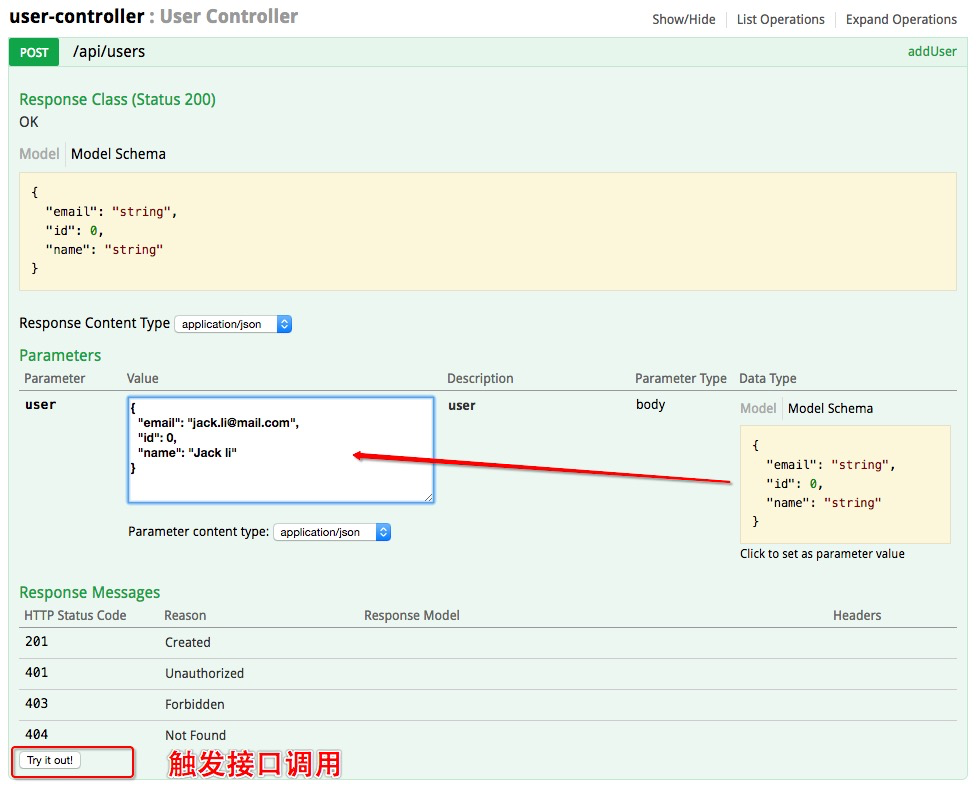
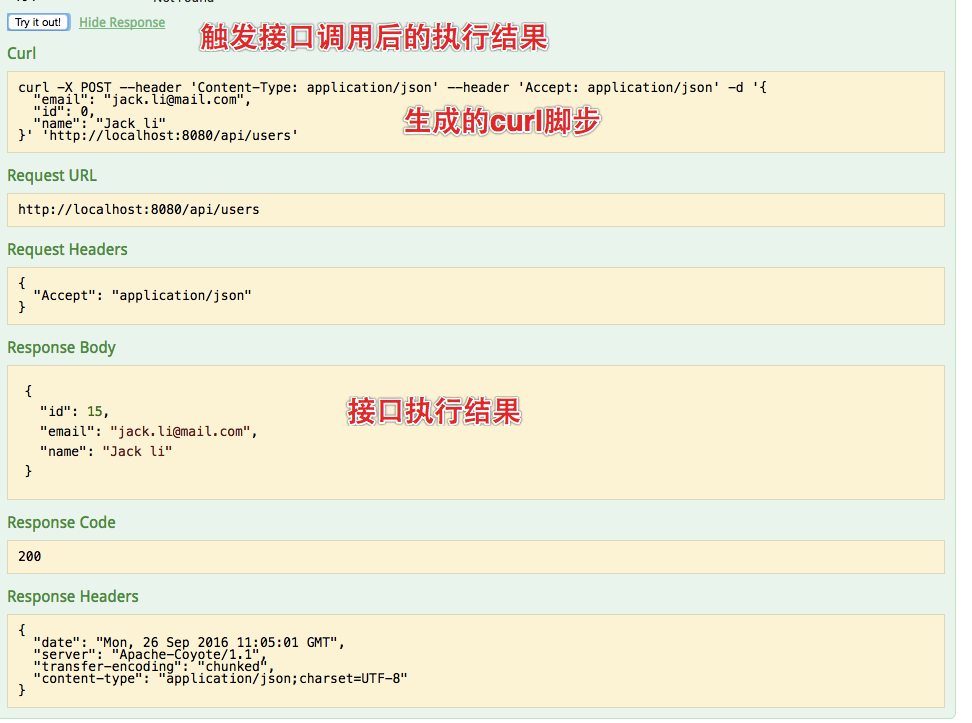
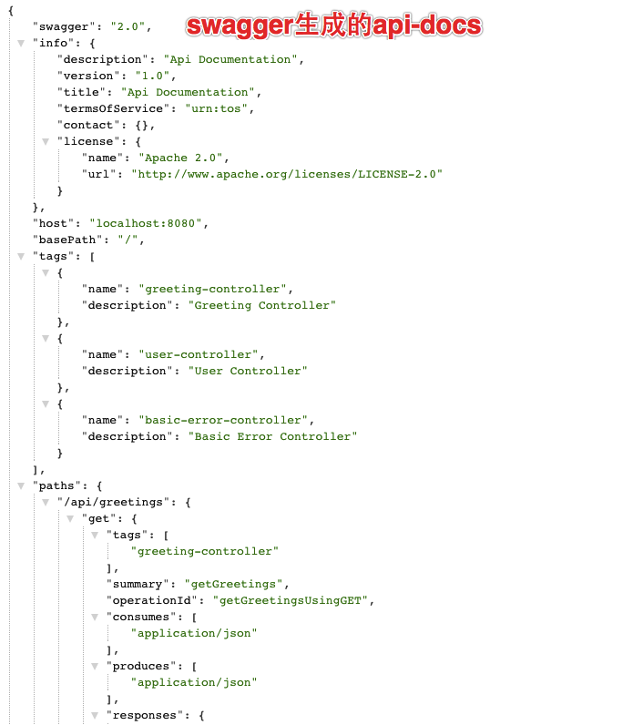
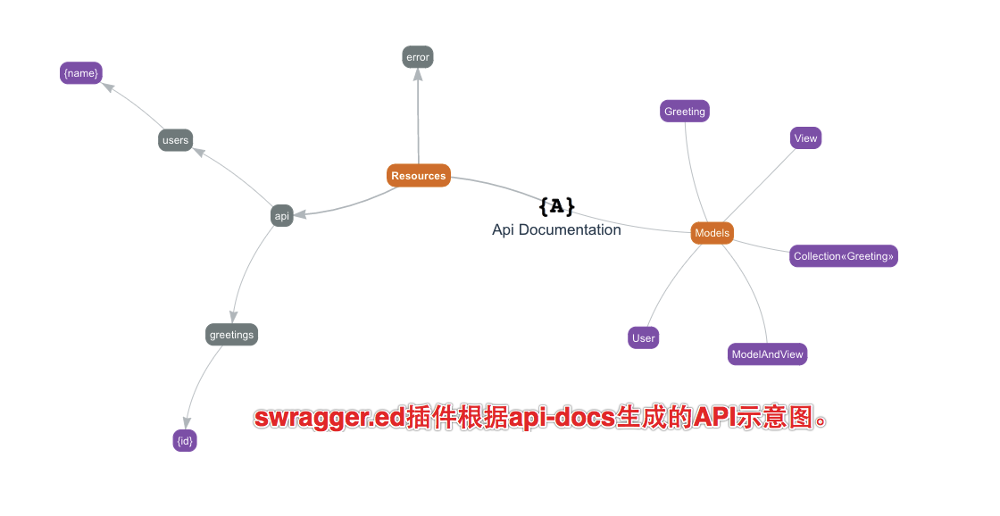

Parent Project
DOCUMENTATION
- README
Modules
Project Documentation

通过引入oss-lib-swagger自动生成RESTful的api的接口文档,出于安全的考虑生成环境(production)暂不生成api文档。
直接在spring boot工程中添加依赖,在非production发布时会生成对应的文档。 1. 添加依赖 2. 部署应用 3. 访问swagger-ui: http://127.0.0.1:8080:8080/swagger-ui.html 接口说明文档  swagger-ui交互请求结果 
4. 访问api-docs: http://127.0.0.1:8080:8080/v2/api-docs api-docks  swagger.ed插件示意图 
<dependency>
<groupId>com.yirendai.oss.lib</groupId>
<artifactId>oss-lib-swagger-spring-boot-${spring-boot.version}</artifactId>
</dependency>
application.yml:
springfox.documentation.swagger.v1.path: '/api-docs' springfox.documentation.swagger.v2.path: '/v2/api-docs'
NOTES:如果项目开启了自定义的SpringMVC，即@EnableWebMvc，需要配置指定swagger-ui.html的路径，如下：
@Configuration
@EnableWebMvc
public class WebMvcConfiguration extends WebMvcConfigurerAdapter {
@Override
public void addResourceHandlers(ResourceHandlerRegistry registry) {
registry.addResourceHandler("swagger-ui.html").addResourceLocations("classpath:/META-INF/resources/");
registry.addResourceHandler("/webjars/**").addResourceLocations("classpath:/META-INF/resources/webjars/");
super.addResourceHandlers(registry);
}
}